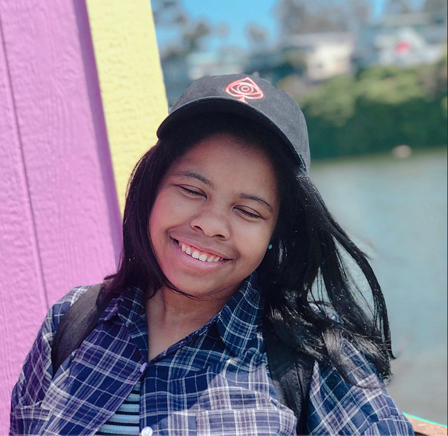
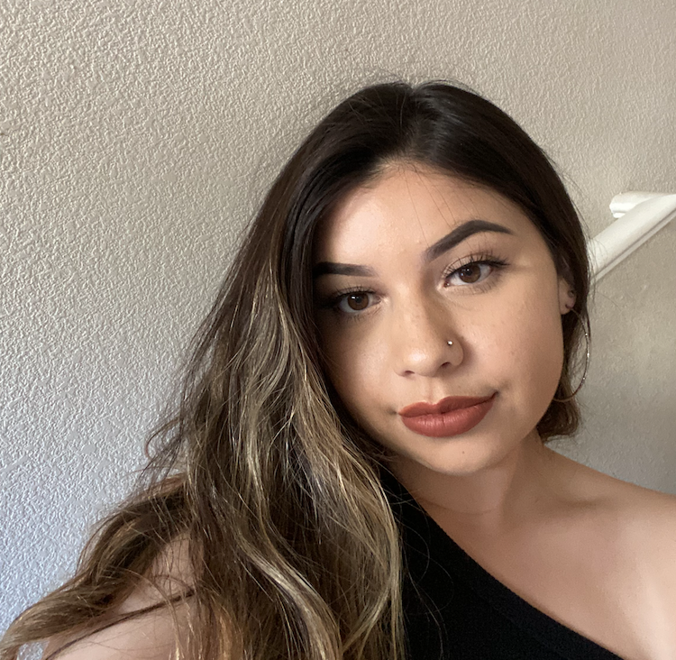

About Us
Our closet
Originally, our topic was redesigning a shopping website. We believed we could make the usual
shopping experience more interactive as well as visually appealing, and we wanted to bring in some
elements we have seen on online dress up games. We began reminiscing about games we used to play
when we were younger on the computer like the old Dollz Mania websites, Stardoll, and The Sims 2.
We quickly decided to instead just make our own dress up game. Our Closet is inspired by the pixel
dolls we used to make as kids and just nostalgic 1990s and 2000s toys and games. It is a shame the Dollz Mania website
is no longer trustworthy or secure because of all the ads, pop ups, and shady links.
Haley Graham
Paragraph about you, your major, and include something nostalgic from 90s/00s for fun...
Aimee Castellon
I am a communications design major with an emphasis in visual design. I like digital art. You can
view some of my illustrations at: Aimee Castellon Portfolio.I enjoy coffee and sleeping in.
Kayla
Lamar

Hey! I’m Kayla and I am currently a second year at CSUMB. My major is Communication Design with a
focus in game design. My hobbies include reading, drawing, and video games. Something nostalgic for
me from the 2000's would be the Game Boy Advance SP and VHS tapes.
Ayline Castrejon

I am a transfer from Cabrillo College. My major is Communication design with a concentration
in Visual Design. Dress up games definitely are nostalgic for me. When I was younger, I would
search “free dress up games” and I would have the most fun time dressing up dolls online.